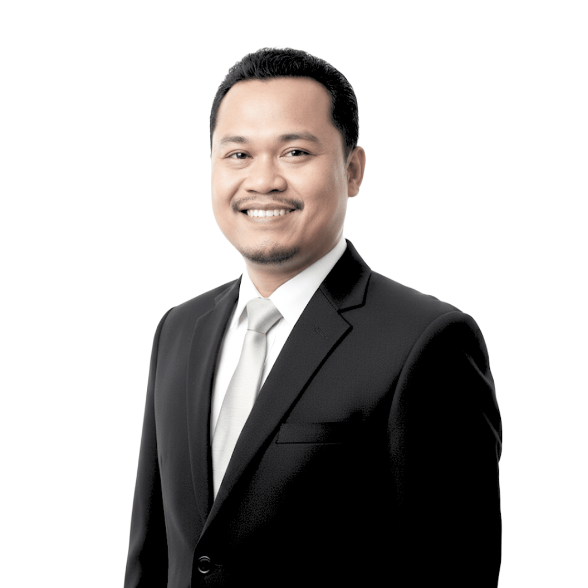

Bab 1: Urgensi Peningkatan Kualitas SDM
Keberhasilan implementasi visi Kota 4.0 sangat bergantung pada ketersediaan dan kemampuan Sumber Daya Manusia (SDM) yang kompeten. Hal ini sejalan dengan Misi Pertama Kota Baubau: "Meningkatkan Kualitas Sumber Daya Manusia untuk Membentuk Insan Seutuhnya (Cerdas, Sehat, & Berakhlak)".
Transformasi digital bukan hanya tentang teknologi, tetapi tentang manusia yang menggerakkannya. Oleh karena itu, pengembangan kapasitas aparatur sipil negara (ASN) dan pemberdayaan talenta digital lokal menjadi fondasi utama dari seluruh inisiatif ini.

Bab 2: Ekosistem Talenta Digital Lokal
Rencana ini didukung oleh ekosistem talenta lokal yang solid dan multi-helix, yang terdiri dari berbagai pihak yang saling berkolaborasi untuk menciptakan inovasi.
Unsur-Unsur Ekosistem:
Pemerintah (Birokrasi)
Diskominfo sebagai motor penggerak utama, didukung oleh ASN yang siap beradaptasi dengan teknologi baru.
Praktisi Profesional
Individu dengan keahlian teknis dan manajerial yang terbukti di industri, membawa pengalaman nyata ke dalam proyek.
Akademisi
Keterlibatan akademisi dari universitas lokal memastikan bahwa inisiatif ini didukung oleh landasan teoretis dan riset yang kuat.
Institusi & Komunitas
Lembaga pendidikan seperti Pondok Informatika dan komunitas seperti Komunitas Programmer Baubau menjadi wadah inkubasi dan kolaborasi talenta.
Bab 3: Profil Tim Inti (Praktisi & Akademisi)
Berikut adalah beberapa figur kunci dari kalangan praktisi dan akademisi yang menjadi tulang punggung keahlian dalam tim transformasi digital.

Irvan, S.Kom
Network Expert & Penggagas Smart City

Hayatul Habirun, S.Kom
FullStack Developer & SysAdmin

Muh. Awaluddin, M.Kom
Linux, Server & DevOps Expert

Hermawan Safrin
Backend Developer (Scalable API)

Ahmad Dahsan
Frontend Developer

Arif Rizal
Backend Developer

Muhdan Fyan Syah Sofian
Project Strategist

Lalu Abdurrahman
Lead Developer & Academic
Bab 4: Peran Institusi dan Komunitas
Kolaborasi dengan institusi pendidikan dan komunitas lokal adalah kunci untuk keberlanjutan ekosistem talenta digital di Kota Baubau.
Pondok Informatika
Berperan sebagai lembaga pendidikan yang mencetak sumber daya manusia terampil dan siap pakai. Alumni Pondok Informatika telah banyak berkontribusi dalam berbagai proyek digital, termasuk menjadi Kepala Sekolah di PI Boarding School dan developer di Disdik Sulsel.
Komunitas Programmer Baubau
Menjadi wadah bagi para talenta IT lokal untuk berkolaborasi, bertukar pengetahuan, dan mengembangkan inovasi-inovasi berbasis teknologi dari akar rumput. Komunitas ini adalah motor penggerak semangat kolaborasi.
Korporasi Lokal (CV Ghonim)
Menyediakan dukungan korporasi, pengalaman dalam implementasi proyek Smart City, dan penyediaan SDM IT yang siap mendukung inisiatif transformasi digital.
Korporasi Lokal (CV Sarjana Komputer)
Penyedia solusi IT terpercaya, mendukung pengadaan dan pemeliharaan infrastruktur.
Bab 5: Birokrasi (Pemerintah)
Aparatur Sipil Negara dari Diskominfo Kota Baubau yang menjadi motor penggerak utama dari sisi pemerintah.

H. La Ode Yakin Nugraha SE.,M,Si
Fungsional Sandiman Ahli Muda

A. Fadil Mainaka, S.Kom., M.Si
Fungsional Sandiman Ahli Muda

Ari Herman, S.Kep., M.M
Pranata Humas Ahli Muda

Hamrizal, S.sos
Analisis Konten Media Sosial